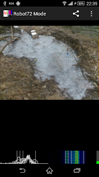
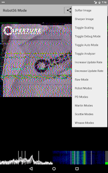

午休十分钟，我用手机接住了太空站的照片
一个业余无线电新手的真实经历：等了三周终于遇上 ISS 过境窗口，手机接上收音机，一款叫 Robot36 的 App 帮他把太空站传来的 SSTV 信号解成了看得见的画面。
那个等了三周的中午
日历翻到十月那天，我终于等到了 ISS 的过境窗口。
说"终于"一点不夸张——业余无线电圈子里想抓一张太空站发回来的 SSTV 图像，就像钓鱼爱好者等那口口相传的稀有种。我在 ISS Detector 上设了定位，手机震了三周，要么是窗口在凌晨两点，要么是赶上出差，要么就是 ARISS 那天没安排 SSTV 活动。那天中午十二点十七分，窗口刚好卡进我午休的十分钟。
设备是上周刚淘的二手八木天线，绑在阳台晾衣架上。收音机是老款的 Yaesu VX-6，充电线还缠着胶带。音频线从耳机孔出来，走了半米接到手机的麦克风转接头——这是业余电台圈子里最土的接法，没有 SDR，没有 USB 声卡，就是最朴素的模拟链路。
信号来了，但解不出来
提前十五分钟我就蹲在阳台了。调谐到 145.800 MHz，静静等。
信号响起来的时候，真的很像科幻电影里的东西——一阵很规律的"哔——哔哔——"，长音短音交替，在 VHF 的底噪里浮着。那是 ISS 的 SSTV 校准头，正在告诉地面接收站："我要开始发图了。"
我打开那个装了快一个月却没正经用过的 App，名字叫 Robot36。界面很朴素，就是一块黑色的解码画布，下面几个按钮。按理说它应该自动检测校准头然后开始解码，但画布上什么都没出现。等了三十秒，还是黑的。
我慌了一下。是不是音频线接反了？收音机音量是不是太小？Robot36 的电平仪表在哪里？我开始乱点，把模式切来切去，切到"原始"模式的时候，画布突然变了——不是黑屏了，是一张灰度图，左边一条长长的竖线，右边密密麻麻的水平条纹，像某种心电图。
后来我才知道，那张灰度图是音频信号的频谱可视化。Robot36 的原始模式不做任何 SSTV 解码，它只把你收到的音频信号直接翻译成一张频谱图：X 轴是时间，Y 轴是频率，颜色亮度代表能量。我盯着那张图看了五秒钟——左边那条长竖线就是 1900 Hz 的校准头音调，后面的水平条纹就是像素行在时间轴上的投影。信号没问题，条纹清晰、边缘锐利，没有断成几截。
问题出在模式匹配上。 Robot36 自动检测没认出这个信号属于哪种 SSTV 编码。
模式的秘密：从 PD 到 Scottie
我开始翻它的文档——Robot36 支持好几种 SSTV 模式，PD 系列是最常见的，还有 Martin、Scottie、Robot 系列，每种模式的扫描时间、分辨率、编码方式都不一样。ISS 常规 SSTV 活动用的最多的是 PD 120，约 120 秒一张图，但有时候也会用 PD 180 或者更快的 Robot 36 模式做测试。
频谱图里那些条纹的密度和持续时间能帮你猜模式——我估了一下，整组条纹大概持续了两分钟，那应该不是 Robot 36（36 秒太短），更像是 PD 120 或 PD 180。我退出原始模式，在模式列表里手动选了 PD 120，把收音机音量调到 75%，重启了一次解码。
这次成了。
画布上开始一行一行地慢慢填颜色——先是发灰的淡蓝，然后是深红，再往下是一片深色里透着一点亮。整个过程很慢，像看一张老照片在暗房里显影。我不敢碰手机，甚至不敢呼吸太重，就蹲在阳台地板上盯着那块屏幕。
约摸两分钟后，图像完整了。一张模糊但能认出来的照片——看起来是太空站的某个舱段，边缘有噪点，色彩也不算鲜艳，但真的是从 400 公里外传下来的。那种感觉很难形容，像接到了一封来自太空的手写信。

为什么是 Robot36
后来我慢慢折腾明白了一些事。
Robot36 原本是一个开源项目，最早是 PC 端的 SSTV 解码器，它的官网上能找到项目的来龙去脉，后来有人移植到了 Android 平台，安装包从官方下载拿就行。它的核心代码里有一整套 SSTV 模式的编码解码算法，从最老的黑白 Robot 模式到高分辨率的 Scottie DX 都支持。在弱信号下，它的 Scottie 模式抗噪能力其实比 PD 系列更好——Scottie 把 R、G、B 三个颜色通道分开独立传输，一个通道丢了另外两个还能正常解码，而 PD 系列是顺序依赖的，一个出错全完。
但对我来说，最实用的是它的两个功能。一个就是刚才救了我命的原始模式——它给你一张频谱图，让你能自己判断信号有没有问题、大概是哪种模式，而不是完全依赖自动检测。另一个是自动保存。解码完成的图像会直接存进系统相册，不用我手动截图。默认路径是 Android 的 Pictures 目录，但可以在设置里改成自己建的文件夹，比如专门分一个 SSTV/ISS/ 子目录，以后接收的图像自动归类。

剩下的三分钟
收到第一张图的时候，ISS 还没飞过去。我赶紧把音量调到 85%，让 Robot36 继续解。接下来的三分钟里，它又解出了两张——一张是 ARISS 的标志，一张是从窗口拍的地球边缘。画质一张比一张好，因为 ISS 越飞越近，信号越来越强。
第四张信号断了——ISS 越过地平线，VHF 信号再也收不到了。
我蹲在阳台地上，手里攥着手机，相册里三张来自太空的照片。楼下是中午十二点半的外卖小哥和买菜的阿姨，谁也不知道头顶四百公里的地方刚发生了一场跨越星际的图像传输。
收尾：一张图的重量
那天之后我又收过几次，成功率时好时坏——有时候自动检测一次就过，有时候信号太弱得在原始模式里盯半分钟才能猜中模式。但 Robot36 帮我建立了一套流程：查过境时间 → 提前准备好设备 → 信号来了先看原始模式确认 → 猜模式 → 手动选 → 耐心等。
对业余无线电这种事来说，运气很重要，但有一款好用的解码器能帮你把运气变成概率。Robot36 不是唯一的 SSTV 解码 App，但它足够轻量，支持的模式全，原始模式的诊断功能在关键时刻能救命——这是我蹲了三周阳台之后，拿到的最实在的结论。源码和整理好的资料分别放在GitHub、Gitee 和 GitCode，国内访问走后面两个更顺。